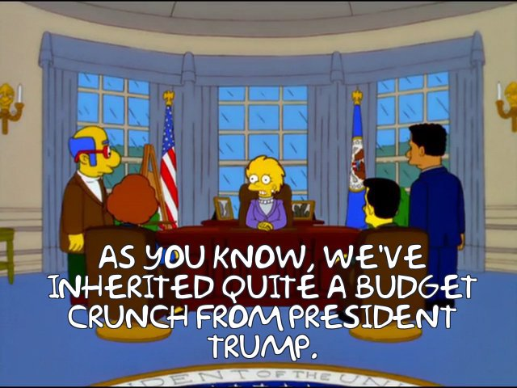
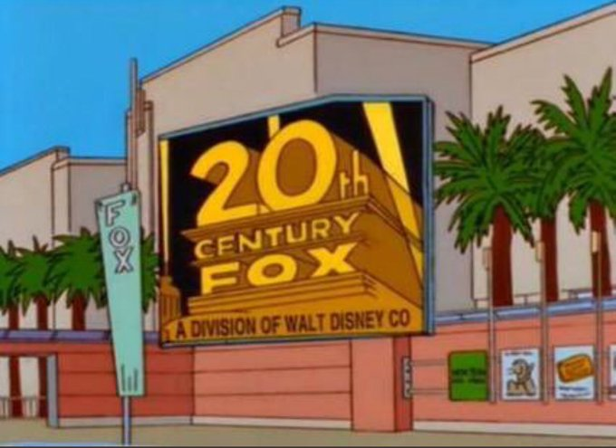
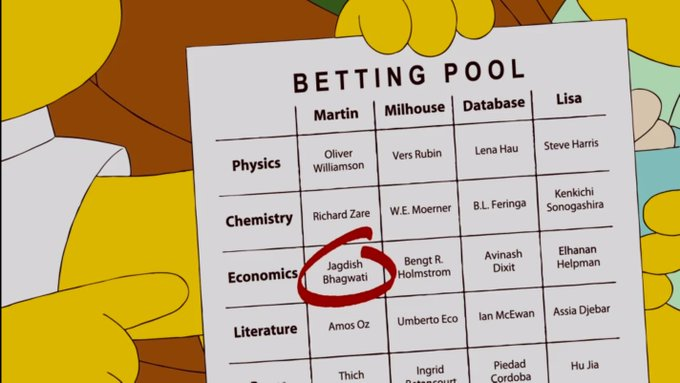
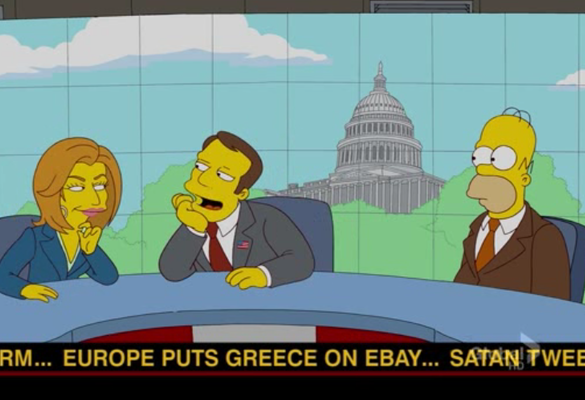

Simpsons:The Fortune Teller
The Simpsons is undeniably a television phenomenon. Both the longest-running American sitcom and animated program, the critically acclaimed cartoon is widely recognized as one of, if not the, best shows of all time for its humorous satire of everything from politics and pop culture to everyday family life. In fact, throughout its nearly 700 episodes, creator Matt Groening and his team have been so on top of the country's cultural pulse, they've even managed to predict several major historical events — along with a few less momentous happenings.
Here are 5 spooky times The Simpsons Predicted the future:
- President Donald Trump:
- Disney's Fox Takeover:
- The Nobel Prize
- Greece’s Debt Default
- The 2020 Experience
In Season 11 When Bart flashes forward into adulthood, viewers learn that Lisa not only becomes president, but inherits "quite a budget crunch" from her predecessor, Donald Trump. "The country is broke?" she asks her aides in one scene. "How can that be?"
At the time, the real Trump presidency was still 16 years away. However, in a 2016 interview with The Hollywood Reporter, writer Dan Greaney explained the joke was meant as a warning to the country. "That just seemed like the logical last stop before hitting bottom," he said. "It was pitched because it was consistent with the vision of America going insane.
This was predicted by Simpsons in the 2000 and it came true in the year 2016.

In Season 10, Episode 5 after a trip to Springfield, director Ron Howard pitches a screenplay that Homer wrote to producer Brian Glazer of 20th Century Fox. At the beginning of the scene, a sign can be seen at the Fox studio lot that reveals the company is now "A Division of Walt Disney Co."
Cut to nearly 20 years later and this sale is officially underway, with the news breaking that Disney has reached a deal to acquire $66.1 billion-worth of Fox on Dec. 14, 2017.

Bengt Holmstrom may not have won the Nobel Prize in Economics until 2016, but one Simpsons character was betting on him six years prior.
In a scene from the season 22 premiere in which Martin holds up a scorecard depicting his Nobel Prize betting pool with Lisa, Milhouse and Database, the MIT professor is clearly marked in one of Milhouse's squares.
The season 22 was premiered in the year 2010 and it came true in the year 2010.

In Season 23, episode 10 when Homer appears as a guest commentator on cable news show Head Butt, a ticker runs across the bottom of the screen that reads, "Europe puts Greece on eBay."
Of course, this was three years before Greece became the first developed country to default to the International Monetary Fund, plunging the country deeper into economic crisis.

If 2020 was a bingo card, The Simpsons could already have at least two squares ticked off. In the nearly 30-year-old episode "Marge in Chains," not only does an unprecedented flu sweep through Springfield, but when the townspeople begin rioting to demand a cure for the virus, a swarm of killer bees that could be likened to the “murder hornets” that recently hit the U.S. unexpectedly come into the picture.
On the other hand, episode co-writer Bill Oakley told The Hollywood Reporter in March that any comparisons the storyline seems to invite to coronavirus are purely coincidental. "There are very few cases where The Simpsons predicted something," he said. "It's mainly just coincidence because the episodes are so old that history repeats itself. Most of these episodes are based on things that happened in the '60s, '70s or '80s that we knew about."